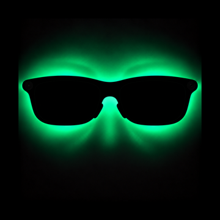
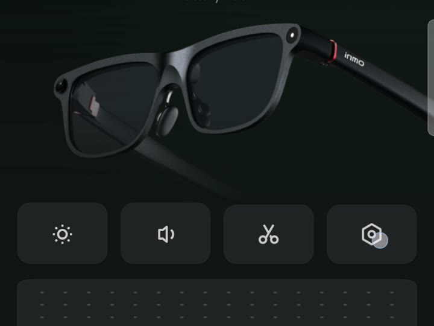
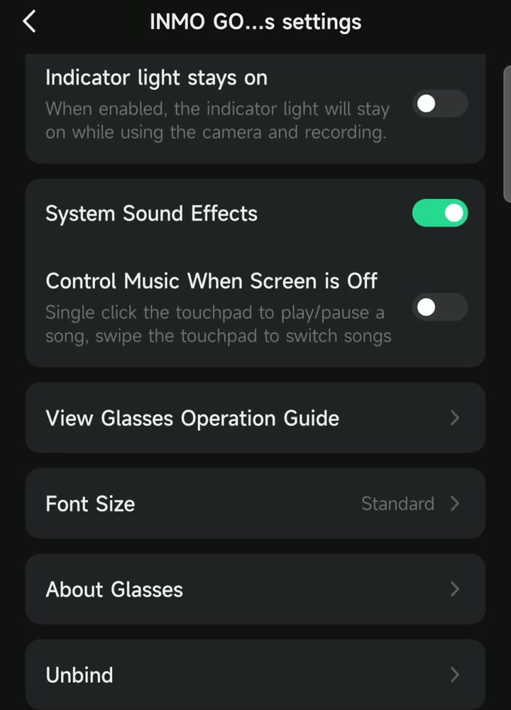
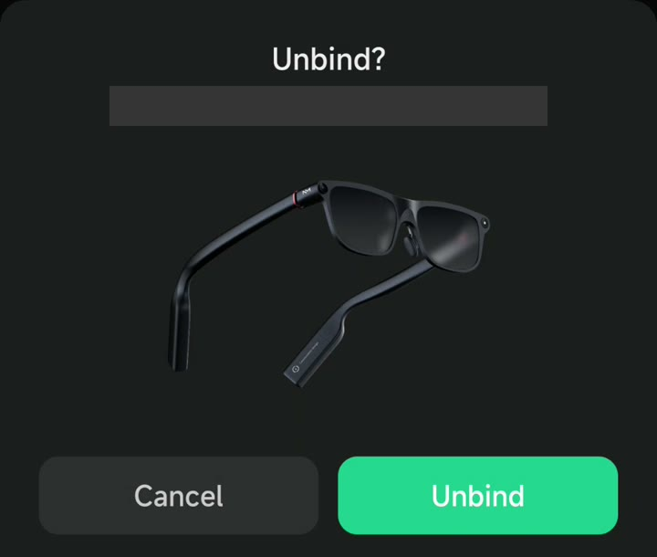
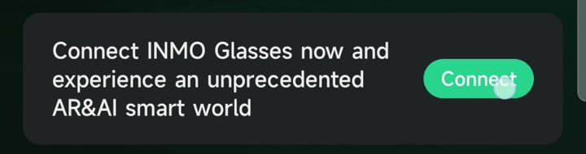
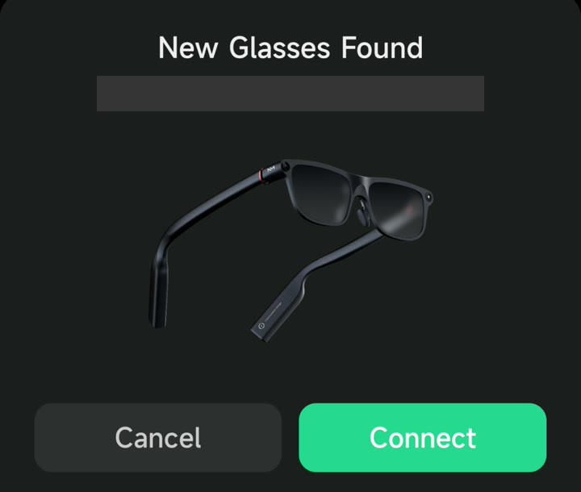
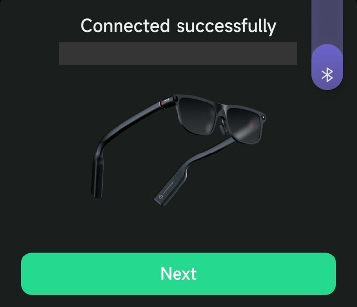
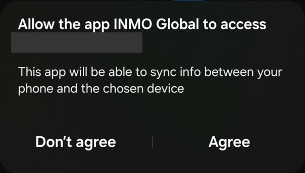

LensSpark
Your Android phone's screen, on your INMO GO3 glasses.
Download for AndroidLensSpark shows what's on your phone on the glasses at about one screenshot per second (up to about four per second with RFCOMM, below). It isn't video, but it's great for anything you'd glance at. Landscape and a dark theme read best.
What it's good for
Sing along
Spotify with lyrics on screen: the words follow the song.
Read a book
Kindle or any e-reader app.
Maps
Google Maps, Waze and other maps. Be safe: don't let the glasses take your eyes off the road, and follow local laws.
Follow the game
Keep a scoreboard or play-by-play in view.
Browse
Web pages, articles, recipes while your hands are busy.
Your feeds
Keep up on social feeds, news and messages.
Hands-free control
There's no ring control; you control what's shown from the phone. Android's Voice Access works really well once you learn it ("scroll down", "tap Next"), and Bixby or Google Assistant can get you a long way.
Install
- Download the APK on your phone and open it. If Android asks, allow your browser to install unknown apps. Play Protect may warn about an unknown developer: choose Install anyway.
- Open LensSpark and tap Connect. Allow Nearby devices and notifications.
- Tap Share screen and accept Android's screen-sharing prompt.
Two ways to connect
| GATT (default) | RFCOMM (Advanced) | |
|---|---|---|
| INMO Global | Keeps working alongside LensSpark | Must unbind the glasses from INMO Global first |
| Speed | About 1 frame per second (8 KB/s) | Up to about 4 frames per second (35 KB/s) |
| Glasses audio | Works if already connected | LensSpark connects it for you |
| Going back | Nothing to do | Unbind in LensSpark, then reconnect in INMO Global (below) |
Change transport in Advanced, only while not connected.
Switching to RFCOMM
In INMO Global, unbind the glasses first. Unbinding resets INMO Global's settings, such as which apps send notifications to the glasses, so you'll set them again when you go back.



Then in LensSpark: Advanced → Transport → RFCOMM, tap Connect, and confirm Bind glasses to LensSpark. Approve Android's prompts to pair and to let LensSpark manage the glasses.
Going back to INMO Global
In LensSpark, tap Unbind. It releases the glasses and removes the phone's Bluetooth pairing. Then in INMO Global:




If LensSpark says it couldn't remove the pairing, remove the glasses in Android's Bluetooth settings before step 1.
Good to know
- Locking the phone stops sharing. Android ends screen capture on lock. Unlock and tap Share screen.
- High quality is the slowest. Use Fast or Balanced for anything that moves.
- While sharing, the glasses' display won't stay asleep. Stop sharing to let it sleep.
- While you share, LensSpark has the glasses' display: glasses apps and INMO Global navigation aren't usable at the same time. Stop sharing to use them.
- Unbinding in INMO Global (needed for RFCOMM) resets its settings, including per-app notification choices. You'll set them again after reconnecting.
- Secure screens (banking apps, password fields, most video apps) show as black, as Android does.
- If the connection drops, LensSpark reconnects by itself, up to 5 tries.
- Battery: the GO3 runs about 2 to 2.5 hours per battery whether or not you're sharing — LensSpark streaming doesn't drain it much faster (measured over two runs, October 2026). The battery swaps, but doing so reboots the glasses — a spare keeps you going after the reboot, reconnecting, and tapping Share screen again.
Privacy
No internet permission, no analytics, no accounts. Nothing captured is saved. Your screen goes from your phone to your glasses over Bluetooth and nowhere else. LensSpark relies on Bluetooth's own pairing encryption and adds none of its own.